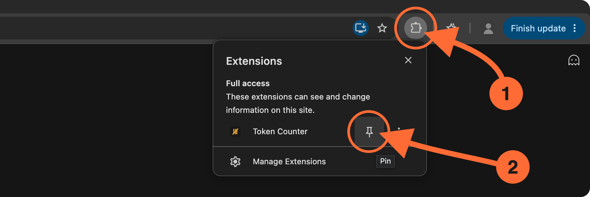
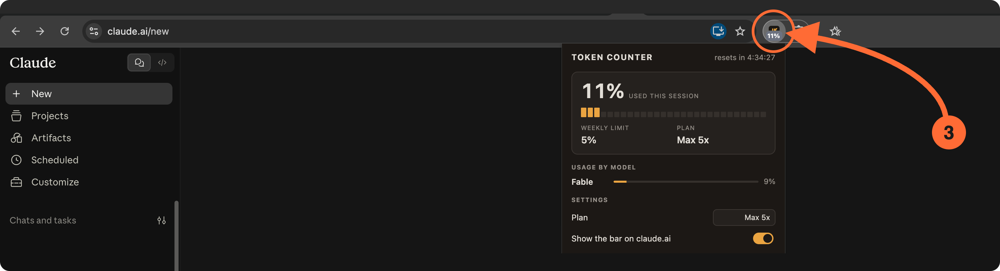

Chrome hides new extensions behind the puzzle icon — pin it first.

The popup shows your session gauge, weekly limits per model, reset timer and settings. Everything comes from Claude's own usage data — the extension sends nothing anywhere else.
